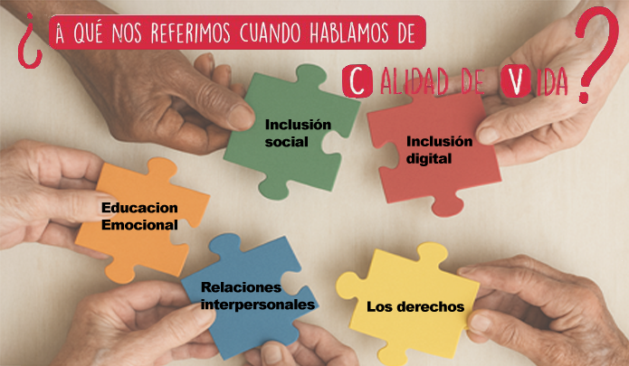

2
Actividad 1: Factores que afectan a la calidad de vida de los adultos mayores.
Selecciona cada pieza del rompecabezas para saber mas acerca de cada factor.
{"typeGame":"Mapa","instructions":"","showMinimize":false,"showActiveAreas":false,"author":"","url":"resources/Picture1.png","authorImage":"","altImage":"","itinerary":{"showClue":false,"clueGame":"","percentageClue":40,"showCodeAccess":false,"codeAccess":"","messageCodeAccess":""},"points":[{"id":"p121287261868","title":"Relaciones Interpersonales","type":2,"url":"","video":"","x":0.385625,"y":0.9266094486089224,"x1":0,"y1":0,"footer":"","author":"","alt":"","iVideo":0,"fVideo":0,"eText":"","iconType":7,"question":"","question_audio":"","toolTip":"","link":"section_bienestar_emocional.html","color":"#000000","fontSize":"14","map":{"id":"a121287261868","pts":[{"id":"p813515782752","title":"","type":0,"url":"","video":"","x":0,"y":0,"x1":0,"y1":0,"footer":"","author":"","alt":"","iVideo":0,"fVideo":0,"eText":"","iconType":0,"question":"","question_audio":"","toolTip":"","link":"","color":"#000000","fontSize":"14","map":{"id":"a813515782752","url":"","alt":"","author":"","pts":[]},"slides":[{"id":"s813515782752","title":"","url":"","author":"","alt":"","footer":""}],"activeSlide":0}],"url":"","alt":"","author":"","active":0},"slides":[{"id":"s121287261868","title":"","url":"","author":"","alt":"","footer":""}],"activeSlide":0,"audio":""},{"id":"p458843065173","title":"Bienestar Emocional","type":2,"url":"","video":"","x":0.204375,"y":0.7056151623377984,"x1":0,"y1":0,"footer":"","author":"","alt":"","iVideo":0,"fVideo":0,"eText":"","iconType":7,"question":"","question_audio":"","toolTip":"","link":"","color":"#000000","fontSize":"14","map":{"id":"a458843065173","pts":[{"id":"p393570362906","title":"","type":0,"url":"","video":"","x":0,"y":0,"x1":0,"y1":0,"footer":"","author":"","alt":"","iVideo":0,"fVideo":0,"eText":"","iconType":0,"question":"","question_audio":"","toolTip":"","link":"","color":"#000000","fontSize":"14","map":{"id":"a393570362906","url":"","alt":"","author":"","pts":[]},"slides":[{"id":"s393570362906","title":"","url":"","author":"","alt":"","footer":""}],"activeSlide":0}],"url":"","alt":"","author":"","active":0},"slides":[{"id":"s458843065173","title":"","url":"","author":"","alt":"","footer":""}],"activeSlide":0,"audio":""},{"id":"p1641659400415","title":"Inclusion social","type":2,"url":"","video":"","x":0.461875,"y":0.48243919667256235,"x1":0,"y1":0,"footer":"","author":"","alt":"","iVideo":0,"fVideo":0,"eText":"","iconType":7,"question":"","question_audio":"","toolTip":"","link":"","color":"#000000","fontSize":"14","map":{"id":"a1641659400415","pts":[{"id":"p1240989888430","title":"","type":0,"url":"","video":"","x":0,"y":0,"x1":0,"y1":0,"footer":"","author":"","alt":"","iVideo":0,"fVideo":0,"eText":"","iconType":0,"question":"","question_audio":"","toolTip":"","link":"","color":"#000000","fontSize":"14","map":{"id":"a1240989888430","url":"","alt":"","author":"","pts":[]},"slides":[{"id":"s1240989888430","title":"","url":"","author":"","alt":"","footer":""}],"activeSlide":0}],"url":"","alt":"","author":"","active":0},"slides":[{"id":"s1641659400415","title":"","url":"","author":"","alt":"","footer":""}],"activeSlide":0,"audio":""},{"id":"p1122557255282","title":"Inclusión digital","type":2,"url":"","video":"","x":0.706875,"y":0.5339413425953091,"x1":0,"y1":0,"footer":"","author":"","alt":"","iVideo":0,"fVideo":0,"eText":"","iconType":7,"question":"","question_audio":"","toolTip":"","link":"","color":"#000000","fontSize":"14","map":{"id":"a1122557255282","pts":[{"id":"p1208402603427","title":"","type":0,"url":"","video":"","x":0,"y":0,"x1":0,"y1":0,"footer":"","author":"","alt":"","iVideo":0,"fVideo":0,"eText":"","iconType":0,"question":"","question_audio":"","toolTip":"","link":"","color":"#000000","fontSize":"14","map":{"id":"a1208402603427","url":"","alt":"","author":"","pts":[]},"slides":[{"id":"s1208402603427","title":"","url":"","author":"","alt":"","footer":""}],"activeSlide":0}],"url":"","alt":"","author":"","active":0},"slides":[{"id":"s1122557255282","title":"","url":"","author":"","alt":"","footer":""}],"activeSlide":0,"audio":""},{"id":"p1707510853725","title":"Los derechos","type":2,"url":"","video":"","x":0.638125,"y":0.772138767488013,"x1":0,"y1":0,"footer":"","author":"","alt":"","iVideo":0,"fVideo":0,"eText":"","iconType":7,"question":"","question_audio":"","toolTip":"","link":"","color":"#000000","fontSize":"14","map":{"id":"a1707510853725","pts":[{"id":"p756163869010","title":"","type":0,"url":"","video":"","x":0,"y":0,"x1":0,"y1":0,"footer":"","author":"","alt":"","iVideo":0,"fVideo":0,"eText":"","iconType":0,"question":"","question_audio":"","toolTip":"","link":"","color":"#000000","fontSize":"14","map":{"id":"a756163869010","url":"","alt":"","author":"","pts":[]},"slides":[{"id":"s756163869010","title":"","url":"","author":"","alt":"","footer":""}],"activeSlide":0}],"url":"","alt":"","author":"","active":0},"slides":[{"id":"s1707510853725","title":"","url":"","author":"","alt":"","footer":""}],"activeSlide":0,"audio":""}],"isScorm":0,"textButtonScorm":"Save score","repeatActivity":false,"textAfter":"","evaluation":0,"selectsGame":[{"typeSelect":0,"numberOptions":4,"quextion":"","options":["","","",""],"solution":"","solutionWord":"","percentageShow":35,"msgError":"","msgHit":""}],"isNavigable":true,"showSolution":true,"timeShowSolution":3,"version":2,"percentajeIdentify":100,"percentajeShowQ":100,"percentajeQuestions":100,"autoShow":false,"autoAudio":true,"optionsNumber":0,"evaluationF":true,"evaluationIDF":"Calidad de vida","id":"20255913626180","order":"","msgs":{"msgSubmit":"Submit","msgIndicateWord":"Provide a word or phrase","msgClue":"Cool! The clue is:","msgErrors":"Errors","msgHits":"Hits","msgScore":"Score","msgMinimize":"Minimize","msgMaximize":"Maximize","msgFullScreen":"Full Screen","msgNoImage":"No picture question","msgSuccesses":"Right! | Excellent! | Great! | Very good! | Perfect!","msgFailures":"It was not that! | Incorrect! | Not correct! | Sorry! | Error!","msgTryAgain":"You need at least %s% of correct answers to get the information. Please try again.","msgEndGameScore":"Please start the game before saving your score.","msgScoreScorm":"The score can't be saved because this page is not part of a SCORM package.","msgPoint":"Point","msgAnswer":"Answer","msgOnlySaveScore":"You can only save the score once!","msgOnlySave":"You can only save once","msgInformation":"Information","msgYouScore":"Your score","msgOnlySaveAuto":"Your score will be saved after each question. You can only play once.","msgSaveAuto":"Your score will be automatically saved after each question.","msgSeveralScore":"You can save the score as many times as you want","msgYouLastScore":"The last score saved is","msgActityComply":"You have already done this activity.","msgPlaySeveralTimes":"You can do this activity as many times as you want","msgClose":"Close","msgPoints":"points","msgPointsA":"Points","msgQuestions":"Questions","msgAudio":"Audio","msgAccept":"Accept","msgYes":"Yes","msgNo":"No","msgShowAreas":"Show active areas","msgShowTest":"Show questionnaire","msgGoActivity":"Click here to do this activity","msgSelectAnswers":"Select the correct options and click on the 'Reply' button.","msgCheksOptions":"Mark all the options in the correct order and click on the 'Reply' button.","msgWriteAnswer":"Write the correct word o phrase and click on the 'Reply' button.","msgIdentify":"Identify","msgSearch":"Find","msgClickOn":"Click on","msgReviewContents":"You must review %s% of the contents of the activity before completing the questionnaire.","msgScore10":"Everything is perfect! Do you want to repeat this activity?","msgScore4":"You have not passed this test. You should review its contents and try again. Do you want to repeat this activity?","msgScore6":"Great! You have passed the test, but you can improve it surely. Do you want to repeat this activity?","msgScore8":"Almost perfect! You can still do it better. Do you want to repeat this activity?","msgNotCorrect":"It is not correct! You have clicked on","msgNotCorrect1":"It is not correct! You have clicked on","msgNotCorrect2":"and the correct answer is","msgNotCorrect3":"Try again!","msgAllVisited":"Great! You have visited the required dots.","msgCompleteTest":"You can do the test.","msgPlayStart":"Click here to start","msgSubtitles":"Subtitles","msgSelectSubtitles":"Select a subtitle file. Supported formats:","msgNumQuestions":"Number of questions","msgHome":"Home","msgReturn":"Return","msgCheck":"Check","msgUncompletedActivity":"Incomplete activity","msgSuccessfulActivity":"Activity: Passed. Score: %s","msgUnsuccessfulActivity":"Activity: Not passed. Score: %s","msgTypeGame":"Map"}}

Relaciones interpersonales en adultos mayores
A lo largo de esta etapa de la vida las relaciones interpersonales cobran mucha importancia, ya que de ellas dependerá, en gran medida, la adaptación a los diversos entornos y la construcción de la autoestima personal.
Bienestar emocional en adultos mayores
La educación emocional es importante en la vejez, ya que en esta etapa se presentan diferentes cambios a nivel cognitivo y físico, los cuales requieren una adecuada percepción y manejo desde un equilibrio emocional.
Inclusión social
Cuando hablamos de la inclusión de los adultos mayores en las prácticas corporales, nos referimos a la práctica de deportes y actividades fisicas grupales.
Inclusión digital en adultos mayores
La capacitación con programas y estrategias dirigidas al adulto mayor se presenta como una oportunidad para desarrollar sus competencias digitales básicas.
Los derechos en los adultos mayores
Otro de los factores esenciales en la vida saludable en los adultos mayores, es el reconocimiento de los derechos propios y sociales.
Your browser is not compatible with this tool.